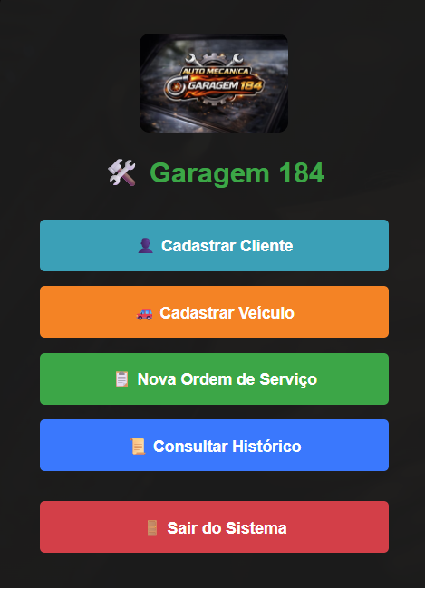

Transformamos o seu gargalo operacional em poder de escala através de arquitetura de software de elite, cloud corporativa e soberania digital.
Do código à nuvem, cobrimos todas as camadas tecnológicas da sua empresa para você focar apenas em crescer.
Desenvolvimento de sistemas sob medida, aplicativos (PWA) e APIs utilizando Node.js e React Native.
Arquitetura, migração e gestão em nuvem (AWS). Containers com Docker e pipelines de CI/CD ágeis.
Integração de IA Generativa aos seus processos. Criação de chatbots inteligentes e automação.
Monitoramento de infraestrutura, suporte técnico avançado e consultoria estratégica.
O mercado está saturado de fábricas de código que entregam o software e terceirizam o problema. Nós nascemos para preencher o vácuo entre o desenvolvimento de ponta e a sustentação corporativa.
Não apenas escrevemos linhas de código. Desenhamos sistemas resilientes focados em zerar a sua dívida técnica e escalar a sua receita.
Com o Sentry ITSM, transformamos o suporte técnico reativo em monitoramento preditivo. A sua operação nunca dorme e nunca para.
Lucas Amarante
Fundador / CEO - Tech Sentry
A tecnologia só cumpre seu papel quando destrava o dia a dia. Veja o resultado que a Tech Sentry entregou para a Auto Mecânica Garagem 184.

Controle manual de Ordens de Serviço (OS), dificuldade em acompanhar resultados, histórico de clientes e o prazo das garantias. Um gargalo comum que dificultava o crescimento da oficina.
Desenvolvemos do zero um sistema web Full-Stack focado em acabar com a papelada e dar controle total ao dono do negócio.
Para garantir velocidade, segurança e alta disponibilidade, construímos a solução com:
A Tech Sentry constrói a tecnologia exata que você precisa para escalar. Vamos tomar um café virtual e mapear a sua solução!